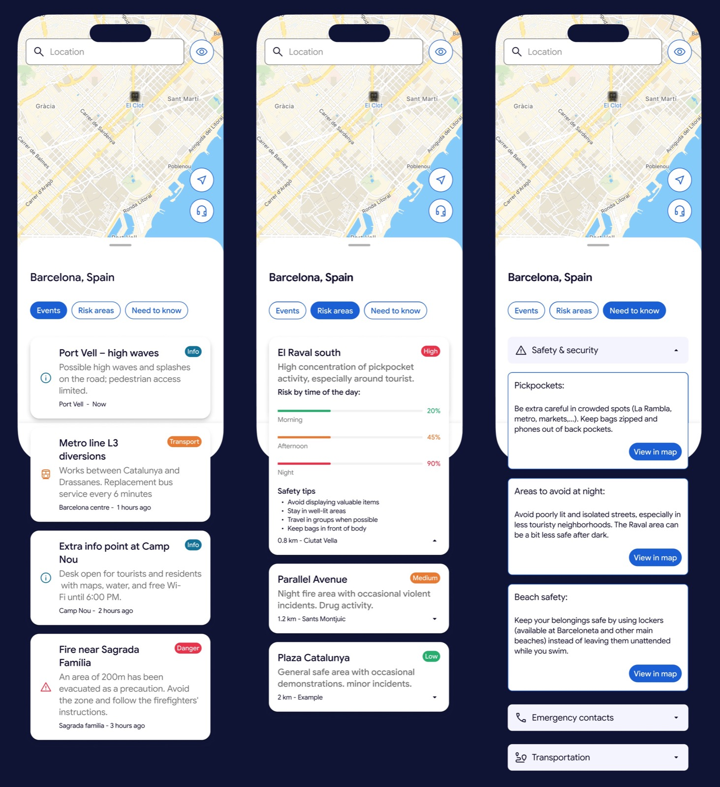

Explore a destination
City search moves the Flutter map to the selected destination and loads bundled JSON for the local events, risk areas and practical guidance shown in the map panel. The app can also centre on the device location when permission is granted.
The prototype used sample city data. The broader concept explored live alerts and location-aware safety information.
